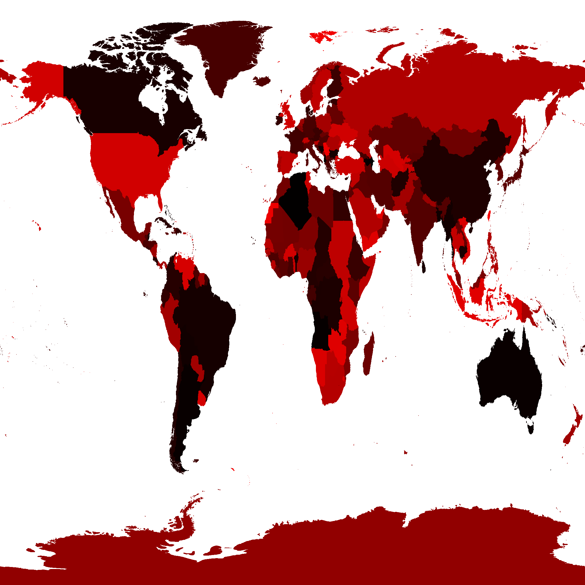
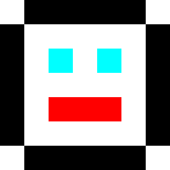

本文是关于将 html 元素与 3d 对齐的文章的延续。 如果您还没有阅读过，您应该先从那里开始，然后再继续这里。
有时使用 Three.js 需要提出创造性的解决方案。 我不确定这是一个很好的解决方案，但我想我会分享它并且 您可以查看它是否建议满足您需求的解决方案。
在上一篇文章中，我们 在 3d 地球周围显示国家/地区名称。我们将如何出租 用户选择一个国家并显示他们的选择？
首先想到的想法是为每个国家生成几何图形。 我们可以像之前介绍的那样使用拣货解决方案。 我们将为每个国家构建 3D 几何图形。如果用户单击网格 我们知道点击了哪个国家/地区。
因此，为了检查该解决方案，我尝试生成所有国家/地区的 3D 网格 使用我用来生成轮廓的相同数据 在上一篇文章中。 结果是一个 15.5meg 的二进制 GLTF (.glb) 文件。让用户下载 15.5meg 对我来说听起来太多了。
有很多方法可以压缩数据。第一个可能是 应用某种算法来降低轮廓的分辨率。我没花 任何时候寻求该解决方案。对于美国的边界来说，这可能是一个巨大的 赢了。对于加拿大边境来说可能要少得多。
另一个解决方案是仅使用实际的数据压缩。例如 gzip 压缩 该文件将其降至 11meg。这减少了 30%，但可能还不够。
我们可以将所有数据存储为 16 位范围值，而不是 32 位浮点值。 或者我们可以使用draco压缩之类的东西 也许这就足够了。我没有检查，我鼓励你检查一下 你自己告诉我事情进展如何，我很想知道。 😅
就我而言，我考虑了GPU挑选解决方案 我们在关于挑选的文章的末尾进行了介绍。在 该解决方案我们用代表该内容的独特颜色绘制了每个网格 网格的 ID。然后我们绘制所有网格并查看单击的颜色 上。
从中汲取灵感，我们可以预先生成一张国家地图 每个国家/地区的颜色是其在我们的国家/地区数组中的索引号。我们可以 然后使用类似的 GPU 选取技术。我们将使用以下方法将地球仪绘制出屏幕 这个索引纹理。查看用户点击的像素的颜色 告诉我们国家/地区 id.
所以，我编写了一些代码 来生成这样的纹理。这里是。

注意：用于生成此纹理的数据来自此网站 因此被许可为 CC-BY-SA.
它只有 217k，比国家网格的 14meg 好得多。事实上我们或许可以 甚至更低的分辨率，但 217k 目前看来已经足够了。
所以让我们尝试使用它来选择国家/地区。
从我们需要的 GPU 选择示例 中获取代码 用于拾取的场景.
const pickingScene = new THREE.Scene(); pickingScene.background = new THREE.Color(0);
并且我们需要将具有索引纹理的地球仪添加到 选择场景.
{
const loader = new THREE.TextureLoader();
const geometry = new THREE.SphereGeometry(1, 64, 32);
+ const indexTexture = loader.load('resources/data/world/country-index-texture.png', render);
+ indexTexture.minFilter = THREE.NearestFilter;
+ indexTexture.magFilter = THREE.NearestFilter;
+
+ const pickingMaterial = new THREE.MeshBasicMaterial({map: indexTexture});
+ pickingScene.add(new THREE.Mesh(geometry, pickingMaterial));
const texture = loader.load('resources/data/world/country-outlines-4k.png', render);
const material = new THREE.MeshBasicMaterial({map: texture});
scene.add(new THREE.Mesh(geometry, material));
}
然后让我们复制我们使用的GPUPickingHelper类
之前做了一些小的更改。
class GPUPickHelper {
constructor() {
// create a 1x1 pixel render target
this.pickingTexture = new THREE.WebGLRenderTarget(1, 1);
this.pixelBuffer = new Uint8Array(4);
- this.pickedObject = null;
- this.pickedObjectSavedColor = 0;
}
pick(cssPosition, scene, camera) {
const {pickingTexture, pixelBuffer} = this;
// set the view offset to represent just a single pixel under the mouse
const pixelRatio = renderer.getPixelRatio();
camera.setViewOffset(
renderer.getContext().drawingBufferWidth, // full width
renderer.getContext().drawingBufferHeight, // full top
cssPosition.x * pixelRatio | 0, // rect x
cssPosition.y * pixelRatio | 0, // rect y
1, // rect width
1, // rect height
);
// render the scene
renderer.setRenderTarget(pickingTexture);
renderer.render(scene, camera);
renderer.setRenderTarget(null);
// clear the view offset so rendering returns to normal
camera.clearViewOffset();
//read the pixel
renderer.readRenderTargetPixels(
pickingTexture,
0, // x
0, // y
1, // width
1, // height
pixelBuffer);
+ const id =
+ (pixelBuffer[0] << 16) |
+ (pixelBuffer[1] << 8) |
+ (pixelBuffer[2] << 0);
+
+ return id;
- const id =
- (pixelBuffer[0] << 16) |
- (pixelBuffer[1] << 8) |
- (pixelBuffer[2] );
- const intersectedObject = idToObject[id];
- if (intersectedObject) {
- // pick the first object. It's the closest one
- this.pickedObject = intersectedObject;
- // save its color
- this.pickedObjectSavedColor = this.pickedObject.material.emissive.getHex();
- // set its emissive color to flashing red/yellow
- this.pickedObject.material.emissive.setHex((time * 8) % 2 > 1 ? 0xFFFF00 : 0xFF0000);
- }
}
}
现在我们可以使用它来选择国家/地区。
const pickHelper = new GPUPickHelper();
function getCanvasRelativePosition(event) {
const rect = canvas.getBoundingClientRect();
return {
x: (event.clientX - rect.left) * canvas.width / rect.width,
y: (event.clientY - rect.top ) * canvas.height / rect.height,
};
}
function pickCountry(event) {
// exit if we have not loaded the data yet
if (!countryInfos) {
return;
}
const position = getCanvasRelativePosition(event);
const id = pickHelper.pick(position, pickingScene, camera);
if (id > 0) {
// we clicked a country. Toggle its 'selected' property
const countryInfo = countryInfos[id - 1];
const selected = !countryInfo.selected;
// if we're selecting this country and modifiers are not
// pressed unselect everything else.
if (selected && !event.shiftKey && !event.ctrlKey && !event.metaKey) {
unselectAllCountries();
}
numCountriesSelected += selected ? 1 : -1;
countryInfo.selected = selected;
} else if (numCountriesSelected) {
// the ocean or sky was clicked
unselectAllCountries();
}
requestRenderIfNotRequested();
}
function unselectAllCountries() {
numCountriesSelected = 0;
countryInfos.forEach((countryInfo) => {
countryInfo.selected = false;
});
}
canvas.addEventListener('pointerup', pickCountry);
上面的代码设置/取消设置 selected 属性
国家的阵列。如果 shift 或 ctrl 或 cmd
按下后，您可以选择多个国家/地区。
剩下的就是显示选定的国家/地区。现在 让我们更新标签。
function updateLabels() {
// exit if we have not loaded the data yet
if (!countryInfos) {
return;
}
const large = settings.minArea * settings.minArea;
// get a matrix that represents a relative orientation of the camera
normalMatrix.getNormalMatrix(camera.matrixWorldInverse);
// get the camera's position
camera.getWorldPosition(cameraPosition);
for (const countryInfo of countryInfos) {
- const {position, elem, area} = countryInfo;
- // large enough?
- if (area < large) {
+ const {position, elem, area, selected} = countryInfo;
+ const largeEnough = area >= large;
+ const show = selected || (numCountriesSelected === 0 && largeEnough);
+ if (!show) {
elem.style.display = 'none';
continue;
}
...
这样我们应该能够选择国家
代码仍然根据国家/地区的面积显示国家/地区，但如果您 单击其中一个将有一个标签。
所以这似乎是选择国家/地区的合理解决方案 但是突出显示选定的国家/地区怎么样？
为此，我们可以从调色板图形中获取灵感。
调色板图形 或索引颜色是 哪些旧系统如 Atari 800、Amiga、NES、 超级任天堂，甚至老式的 IBM PC 都使用过。而不是存储位图 作为 RGBA 颜色，每种颜色 8 位，每个像素 32 字节或更多，它们存储 位图为 8 位值或更少。每个像素的值是一个索引 进入调色板。例如一个值 图像中的 3 表示“显示颜色 3”。 color#3 是什么颜色 定义在其他地方称为“调色板”。
在 JavaScript 中，你可以这样想
const face7x7PixelImageData = [ 0, 1, 1, 1, 1, 1, 0, 1, 0, 0, 0, 0, 0, 1, 1, 0, 2, 0, 2, 0, 1, 1, 0, 0, 0, 0, 0, 1, 1, 0, 3, 3, 3, 0, 1, 1, 0, 0, 0, 0, 0, 1, 0, 1, 1, 1, 1, 1, 1, ]; const palette = [ [255, 255, 255], // white [ 0, 0, 0], // black [ 0, 255, 255], // cyan [255, 0, 0], // red ];
其中图像数据中的每个像素都是调色板的索引。如果你解释 通过上面的调色板的图像数据你会得到这个图像

在我们的例子中，我们上面已经有一个具有不同id的纹理 每个国家。所以，我们可以通过调色板使用相同的纹理 纹理赋予每个国家自己的颜色。通过改变调色板 纹理我们可以为每个国家着色。例如通过设置 整个调色板纹理为黑色，然后为一个国家的条目 在调色板中使用不同的颜色，我们可以突出显示该国家/地区。
要做调色板索引图形需要一些自定义着色器代码。 让我们修改 Three.js 中的默认着色器。 这样我们就可以根据需要使用光照和其他功能。
就像我们在有关为大量对象设置动画的文章中介绍的那样
我们可以通过向材质添加函数来修改默认着色器
onBeforeCompile 属性.
默认片段着色器在编译前看起来像这样。
#include <common>
#include <color_pars_fragment>
#include <uv_pars_fragment>
#include <map_pars_fragment>
#include <alphamap_pars_fragment>
#include <aomap_pars_fragment>
#include <lightmap_pars_fragment>
#include <envmap_pars_fragment>
#include <fog_pars_fragment>
#include <specularmap_pars_fragment>
#include <logdepthbuf_pars_fragment>
#include <clipping_planes_pars_fragment>
void main() {
#include <clipping_planes_fragment>
vec4 diffuseColor = vec4( diffuse, opacity );
#include <logdepthbuf_fragment>
#include <map_fragment>
#include <color_fragment>
#include <alphamap_fragment>
#include <alphatest_fragment>
#include <specularmap_fragment>
ReflectedLight reflectedLight = ReflectedLight( vec3( 0.0 ), vec3( 0.0 ), vec3( 0.0 ), vec3( 0.0 ) );
#ifdef USE_LIGHTMAP
reflectedLight.indirectDiffuse += texture2D( lightMap, vLightMapUv ).xyz * lightMapIntensity;
#else
reflectedLight.indirectDiffuse += vec3( 1.0 );
#endif
#include <aomap_fragment>
reflectedLight.indirectDiffuse *= diffuseColor.rgb;
vec3 outgoingLight = reflectedLight.indirectDiffuse;
#include <envmap_fragment>
gl_FragColor = vec4( outgoingLight, diffuseColor.a );
#include <premultiplied_alpha_fragment>
#include <tonemapping_fragment>
#include <colorspace_fragment>
#include <fog_fragment>
}
挖掘所有这些片段
我们发现 Three.js 使用一个名为 diffuseColor 的变量来管理
基材颜色。它在 <color_fragment> snippet 中设置此值
所以我们应该能够在那之后修改它。
diffuseColor 此时着色器中的颜色应该已经是来自
我们的轮廓纹理，这样我们就可以从调色板纹理中查找颜色
并将它们混合以获得最终结果。
就像我们之前所做的一样，我们将创建一个数组
的搜索和替换字符串并将它们应用到着色器
Material.onBeforeCompile.
{
const loader = new THREE.TextureLoader();
const geometry = new THREE.SphereGeometry(1, 64, 32);
const indexTexture = loader.load('resources/data/world/country-index-texture.png', render);
indexTexture.minFilter = THREE.NearestFilter;
indexTexture.magFilter = THREE.NearestFilter;
const pickingMaterial = new THREE.MeshBasicMaterial({map: indexTexture});
pickingScene.add(new THREE.Mesh(geometry, pickingMaterial));
+ const fragmentShaderReplacements = [
+ {
+ from: '#include <common>',
+ to: `
+ #include <common>
+ uniform sampler2D indexTexture;
+ uniform sampler2D paletteTexture;
+ uniform float paletteTextureWidth;
+ `,
+ },
+ {
+ from: '#include <color_fragment>',
+ to: `
+ #include <color_fragment>
+ {
+ vec4 indexColor = texture2D(indexTexture, vUv);
+ float index = indexColor.r * 255.0 + indexColor.g * 255.0 * 256.0;
+ vec2 paletteUV = vec2((index + 0.5) / paletteTextureWidth, 0.5);
+ vec4 paletteColor = texture2D(paletteTexture, paletteUV);
+ // diffuseColor.rgb += paletteColor.rgb; // white outlines
+ diffuseColor.rgb = paletteColor.rgb - diffuseColor.rgb; // black outlines
+ }
+ `,
+ },
+ ];
const texture = loader.load('resources/data/world/country-outlines-4k.png', render);
const material = new THREE.MeshBasicMaterial({map: texture});
+ material.onBeforeCompile = function(shader) {
+ fragmentShaderReplacements.forEach((rep) => {
+ shader.fragmentShader = shader.fragmentShader.replace(rep.from, rep.to);
+ });
+ };
scene.add(new THREE.Mesh(geometry, material));
}
上面可以看到我们添加了3个制服，indexTexture，paletteTexture，
和 paletteTextureWidth。我们从 indexTexture 获得颜色
并将其转换为索引。 vUv 是由提供的纹理坐标
three.js。然后我们使用该索引从调色板纹理中获取颜色。
然后我们将结果与当前的 diffuseColor 混合。 diffuseColor
此时是我们的黑白轮廓纹理，因此如果我们添加两种颜色
我们会得到白色的轮廓。如果我们减去当前的漫反射颜色，我们会得到
黑色轮廓.
在渲染之前我们需要设置调色板纹理 和这 3 件制服。
对于调色板纹理，它只需要足够宽即可 每个国家保留一种颜色+海洋一种颜色（id = 0）。 有240多个国家。我们可以等到 加载国家/地区列表以获取确切的数字或进行查找。 只选择一些更大的数字并没有多大坏处，所以 让我们选择 512.
这是创建调色板纹理的代码
const maxNumCountries = 512;
const paletteTextureWidth = maxNumCountries;
const paletteTextureHeight = 1;
const palette = new Uint8Array(paletteTextureWidth * 4);
const paletteTexture = new THREE.DataTexture(
palette, paletteTextureWidth, paletteTextureHeight);
paletteTexture.minFilter = THREE.NearestFilter;
paletteTexture.magFilter = THREE.NearestFilter;
A DataTexture 让我们提供纹理原始数据。在这种情况下
我们给它 512 种 RGBA 颜色，每种颜色 4 个字节，每个字节是
红色、绿色和蓝色分别使用从 0 到 255 的值。
让我们用随机颜色填充它以查看它的工作
for (let i = 1; i < palette.length; ++i) {
palette[i] = Math.random() * 256;
}
// set the ocean color (index #0)
palette.set([100, 200, 255, 255], 0);
paletteTexture.needsUpdate = true;
任何时候我们希望 Three.js 更新调色板纹理
palette 数组的内容我们需要设置 paletteTexture.needsUpdate
到true.
然后我们仍然需要在材质上设置制服.
const geometry = new THREE.SphereGeometry(1, 64, 32);
const material = new THREE.MeshBasicMaterial({map: texture});
material.onBeforeCompile = function(shader) {
fragmentShaderReplacements.forEach((rep) => {
shader.fragmentShader = shader.fragmentShader.replace(rep.from, rep.to);
});
+ shader.uniforms.paletteTexture = {value: paletteTexture};
+ shader.uniforms.indexTexture = {value: indexTexture};
+ shader.uniforms.paletteTextureWidth = {value: paletteTextureWidth};
};
scene.add(new THREE.Mesh(geometry, material));
这样我们就得到了随机着色的国家.
现在我们可以看到索引和调色板纹理正在工作 让我们操作调色板以突出显示。
首先让我们创建一个函数，让我们传入一个 Three.js 设置颜色样式并为我们提供可以放入调色板纹理中的值。
const tempColor = new THREE.Color();
function get255BasedColor(color) {
tempColor.set(color);
const base = tempColor.toArray().map(v => v * 255);
base.push(255); // alpha
return base;
}
像这样调用它color = get255BasedColor('red')将
返回一个像 [255, 0, 0, 255].
这样的数组__接下来让我们用它来制作一些颜色并填充 调色板.
const selectedColor = get255BasedColor('red');
const unselectedColor = get255BasedColor('#444');
const oceanColor = get255BasedColor('rgb(100,200,255)');
resetPalette();
function setPaletteColor(index, color) {
palette.set(color, index * 4);
}
function resetPalette() {
// make all colors the unselected color
for (let i = 1; i < maxNumCountries; ++i) {
setPaletteColor(i, unselectedColor);
}
// set the ocean color (index #0)
setPaletteColor(0, oceanColor);
paletteTexture.needsUpdate = true;
}
现在让我们使用这些函数来更新调色板，当一个国家 被选中
function getCanvasRelativePosition(event) {
const rect = canvas.getBoundingClientRect();
return {
x: (event.clientX - rect.left) * canvas.width / rect.width,
y: (event.clientY - rect.top ) * canvas.height / rect.height,
};
}
function pickCountry(event) {
// exit if we have not loaded the data yet
if (!countryInfos) {
return;
}
const position = getCanvasRelativePosition(event);
const id = pickHelper.pick(position, pickingScene, camera);
if (id > 0) {
const countryInfo = countryInfos[id - 1];
const selected = !countryInfo.selected;
if (selected && !event.shiftKey && !event.ctrlKey && !event.metaKey) {
unselectAllCountries();
}
numCountriesSelected += selected ? 1 : -1;
countryInfo.selected = selected;
+ setPaletteColor(id, selected ? selectedColor : unselectedColor);
+ paletteTexture.needsUpdate = true;
} else if (numCountriesSelected) {
unselectAllCountries();
}
requestRenderIfNotRequested();
}
function unselectAllCountries() {
numCountriesSelected = 0;
countryInfos.forEach((countryInfo) => {
countryInfo.selected = false;
});
+ resetPalette();
}
并且我们应该能够突出显示1个或多个国家/地区。
这似乎有效！
一件小事是我们无法在不改变的情况下旋转地球 选择状态。如果我们选择一个国家然后想要 旋转地球仪，选择将会改变。
让我们尝试解决这个问题。从我的脑海中我们可以检查两件事。 单击和放开之间经过了多少时间。 另一个是用户是否实际移动了鼠标。如果 时间很短或者如果他们没有移动鼠标那么它 可能是一次点击。否则他们可能正在尝试 拖动地球仪。
+const maxClickTimeMs = 200;
+const maxMoveDeltaSq = 5 * 5;
+const startPosition = {};
+let startTimeMs;
+
+function recordStartTimeAndPosition(event) {
+ startTimeMs = performance.now();
+ const pos = getCanvasRelativePosition(event);
+ startPosition.x = pos.x;
+ startPosition.y = pos.y;
+}
function getCanvasRelativePosition(event) {
const rect = canvas.getBoundingClientRect();
return {
x: (event.clientX - rect.left) * canvas.width / rect.width,
y: (event.clientY - rect.top ) * canvas.height / rect.height,
};
}
function pickCountry(event) {
// exit if we have not loaded the data yet
if (!countryInfos) {
return;
}
+ // if it's been a moment since the user started
+ // then assume it was a drag action, not a select action
+ const clickTimeMs = performance.now() - startTimeMs;
+ if (clickTimeMs > maxClickTimeMs) {
+ return;
+ }
+
+ // if they moved assume it was a drag action
+ const position = getCanvasRelativePosition(event);
+ const moveDeltaSq = (startPosition.x - position.x) ** 2 +
+ (startPosition.y - position.y) ** 2;
+ if (moveDeltaSq > maxMoveDeltaSq) {
+ return;
+ }
- const position = {x: event.clientX, y: event.clientY};
const id = pickHelper.pick(position, pickingScene, camera);
if (id > 0) {
const countryInfo = countryInfos[id - 1];
const selected = !countryInfo.selected;
if (selected && !event.shiftKey && !event.ctrlKey && !event.metaKey) {
unselectAllCountries();
}
numCountriesSelected += selected ? 1 : -1;
countryInfo.selected = selected;
setPaletteColor(id, selected ? selectedColor : unselectedColor);
paletteTexture.needsUpdate = true;
} else if (numCountriesSelected) {
unselectAllCountries();
}
requestRenderIfNotRequested();
}
function unselectAllCountries() {
numCountriesSelected = 0;
countryInfos.forEach((countryInfo) => {
countryInfo.selected = false;
});
resetPalette();
}
+canvas.addEventListener('pointerdown', recordStartTimeAndPosition);
canvas.addEventListener('pointerup', pickCountry);
并且通过这些更改似乎对我有用。
我不是用户体验专家，所以我很想听听是否有更好的 解决方案.
我希望这能让您了解索引图形如何有用 以及如何修改 Three.js 的着色器以添加简单的功能。 如何使用 GLSL（编写着色器的语言）对于 这篇文章。有一些链接到一些信息 后处理文章.